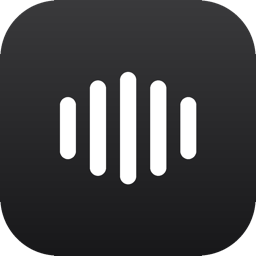

TranscriptorPress a key, speak, and the text lands at your cursor.
Dictation for macOS, Windows and Linux. It works in every app, keeps your transcriptions on your computer, and runs on your own Soniox key for about $0.12 per hour of speech.
Choose your system below.
All downloads
- macOS macOS 15 or later, Apple Silicon and Intel Disk image
- Windows Windows 10 or 11, 64-bit Installer
- Linux 64-bit, X11 or Wayland AppImage.deb